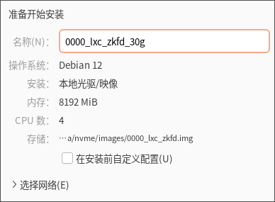
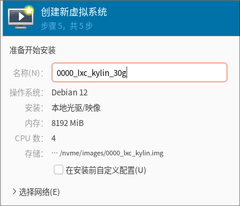
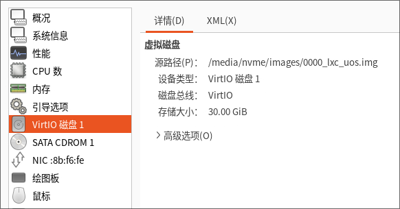

20250220
1. arm64-lxc images
Changed to ubuntu lxc image.
Under arm64 minimal vm:
sudo apt-get install mate-desktop-environment-core
# This will install the complete MATE desktop
sudo apt-get install mate-desktop-environment
# This will install the complete MATE desktop including a few extras
sudo apt-get install mate-desktop-environment-extras
Changes to lightdm:
$ sudo apt install -y lightdm
$ sudo systemctl set-default graphical.target
$ cat /etc/lightdm/lightdm.conf
[LightDM]
minimum-vt=8
[SeatDefaults]
autologin-guest=false
autologin-user=test
autologin-user-timeout=0
autologin-session=mate
Shutdown the vm and convert it to lxc images.
2. libvirt-lxc network
ubuntulxc:
# cat /var/lib/lxc/ubuntulxc/rootfs/etc/systemd/network/05-eth0.network
[Match]
Name=eth0
[Network]
DHCP=yes
########################################3
In lxc instance:
$ sudo systemctl disable NetworkManager
$ sudo systemctl enable systemd-networkd
########################################3
zkfdlxc:
The same as ubuntulxc
3. libvirt-lxc reboot
Seems no issue under arm64(debian 12.9).
Sometimes it will not OK. needed to open log and view libvirtd's behavior.
4. sound
Solved via:
test@idv:~$ cat /etc/pulse/default.pa
load-module module-alsa-card device_id=0
load-module module-alsa-card device_id=1
### Make some devices default
#set-default-sink output
#set-default-source input
Added to usermod, then aplay -L will acts well:
usermod -aG audio test
usermod -aG audio root
usermod -aG pulse test
usermod -aG pulse-access test
5. kylin desktop issue(arm64)
solved via replace the package(using ubuntu's package):
sudo apt install xserver-xorg-video-all=1:7.7+19ubuntu14
6. x86 to-do
zkfd image:



kylin image:



uos image:



Notice, uos could be upgrade under vm.

Notice, uos lxc upgrade will failed:

7. ffmpeg for cutting mp4
Via(start time, stop time):
fmpeg -ss 00:02:23 -to 00:06:59 -i ~/Downloads/bao.mp4 -threads 2 -c:v copy -c:a copy mybao.mp4